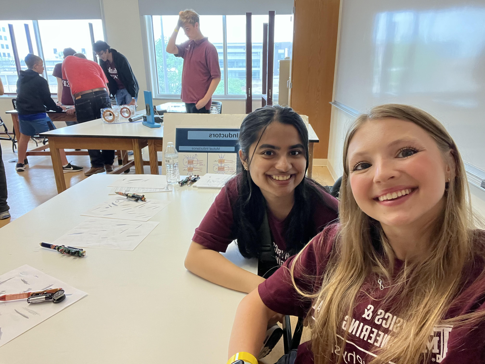
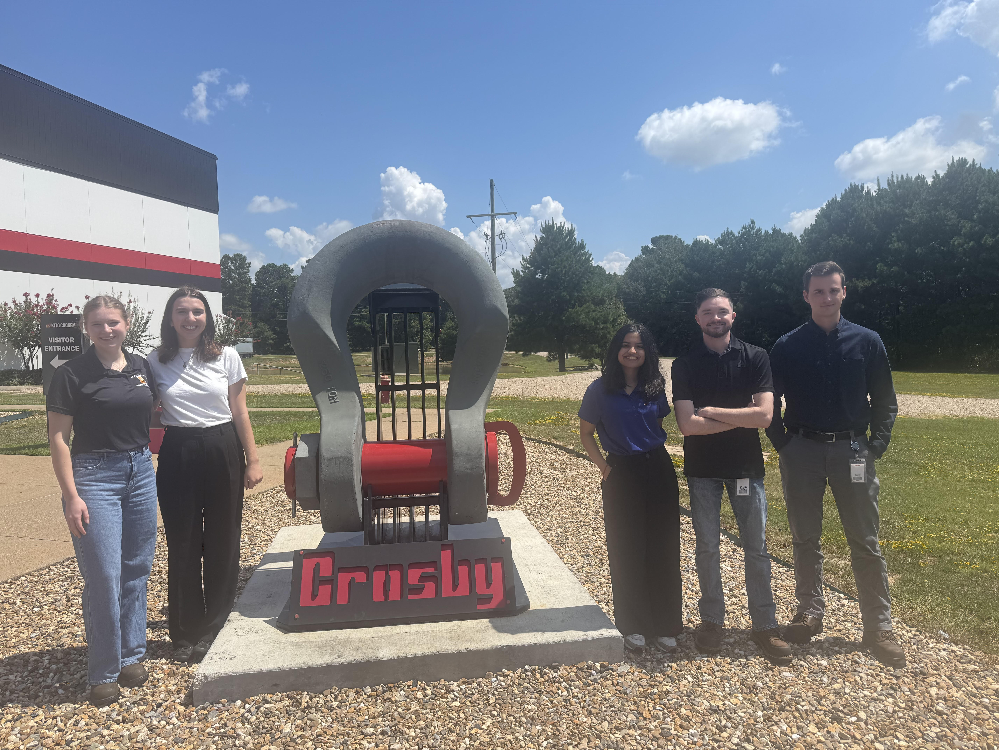
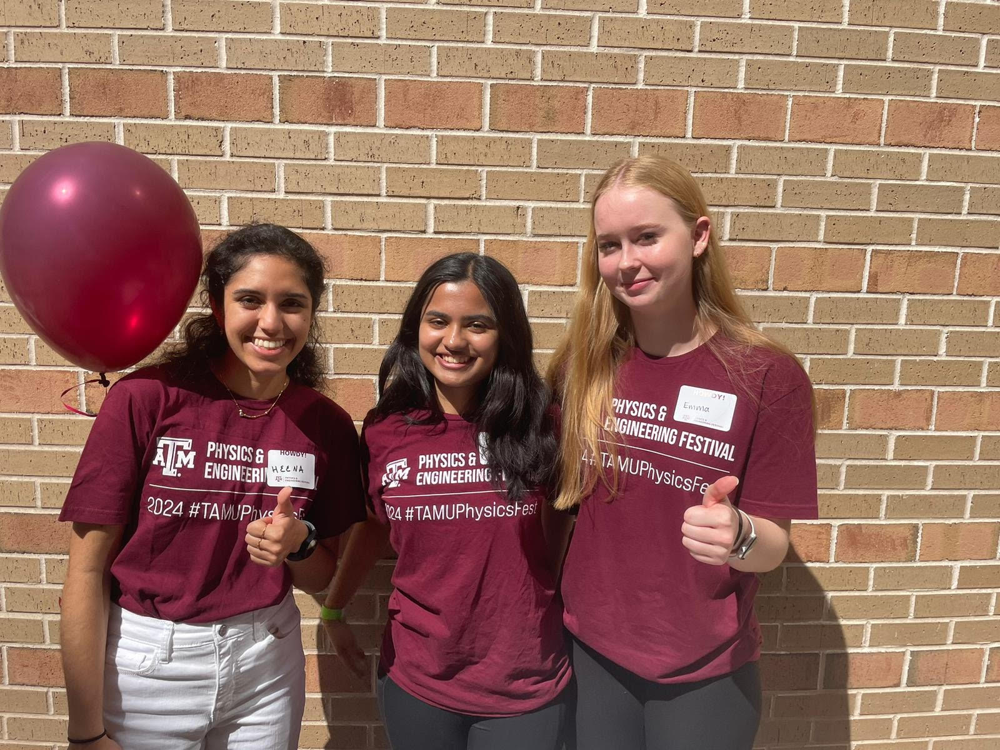

I recently participated in the 2025 Physics Festival, which attracted over 6,000 attendees from across Texas. My responsibilities included demonstrating physics experiments and ensuring smooth functionality of the event. This experience allowed me to develop my communication skills by explaining scientific concepts to a diverse audience, from young children to adults. Learn more about the event: Physics Festival 2025

During my internship, I volunteered for the company’s annual “Lifting For Troops” event, which raises funds for educational scholarships for children of military personnel. This was a profoundly humbling experience that increased my appreciation for the sacrifices made by military families. My role involved coordinating with distributors to encourage their participation, which developed my communication and project coordination skills.Learn more about the event: Physics Festival 2024

My first Physics Festival in 2024 attracted over 5,000 participants and provided my initial experience with educational outreach. Presenting hands-on demonstrations and interacting with such a large and diverse audience challenged me to refine my explanations of concepts and helped me understand the importance of STEM education accessibility. Learn more about the event: Physics Festival 2024

Additional STEM Education resources: STEM Education at U.S. Department of Education